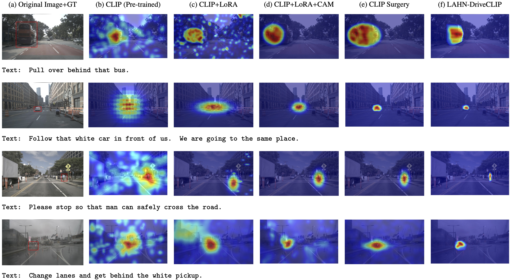
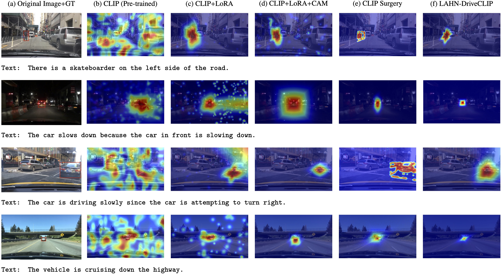

Overview

Abstract
Vision–language models such as CLIP have demonstrated strong zero-shot capabilities by aligning visual and textual representations, yet adapting these models for object localization in autonomous driving remains challenging due to limited annotated data and the lack of dense pixel-level supervision. In this paper, we propose LAHN-DriveCLIP, a localization-aware CLIP adaptation framework designed for weakly supervised vision–language localization in complex driving environments. Our approach leverages low-rank adaptation (LoRA) to efficiently fine-tune CLIP using annotated image–text pairs while keeping the pretrained vision and text encoders frozen. Localization is guided through class activation maps (CAMs) rather than direct bounding-box regression, where coarse bounding-box annotations are converted into Gaussian spatial targets and aligned with CAM responses during training. To further enhance discriminative localization, we introduce CAM-guided hard negative mining, which emphasizes challenging negative image–text pairs based on spatial activation inconsistencies. We train LAHN-DriveCLIP on the Talk2Car dataset using the standard training–evaluation split and further evaluate its generalization across multiple autonomous driving datasets. Experimental results demonstrate that the proposed method consistently improves both object localization and cross-modal retrieval accuracy compared with CLIP-based baselines, while preserving interpretable activation maps and strong vision–language alignment. These findings highlight the effectiveness of parameter-efficient, localization-aware adaptation for autonomous driving scenarios with weak, bounding box–level supervision.
Method
LoRA-based CLIP adaptation. The pretrained CLIP vision and text encoders remain frozen, while low-rank adapters are inserted into selected attention projections. This preserves the pretrained cross-modal representation space and restricts learning to a compact set of trainable parameters.
Gaussian CAM alignment for spatial grounding. gScoreCAM produces an activation map from the image–text similarity score. Bounding boxes are converted into smooth Gaussian heatmaps, and an L2 alignment loss encourages the activation map to concentrate around the referred object without requiring a box-regression head.
CAM-guided hard negative mining. Negative samples are weighted according to the soft-IoU overlap between their activation maps. Spatially confusing negatives therefore receive larger contrastive weights, allowing the model to focus on semantically similar yet spatially misleading image–text pairs.
Joint localization-aware objective. The final loss combines CAM-guided contrastive learning with Gaussian CAM alignment, while gradients are propagated exclusively through the LoRA parameters.
LoRA Adaptation of Transformer Projections

Results
LAHN-DriveCLIP achieves the strongest cross-modal retrieval and localization performance among the evaluated CLIP-based methods. On Talk2Car, it reaches 92.48% Top-2 image-to-text retrieval and 93.66% Top-2 text-to-image retrieval. For localization, it obtains 61.93% EBPG, 57.74% IoU 0.5 , and 68.02% Point Accuracy. Cross-domain evaluations on BDD-X, KITTI, and Udacity further demonstrate robust generalization under distribution shift.
Quantitative Results
Cross-Modal Retrieval
| Method | Talk2Car | BDD-X | ||||||
|---|---|---|---|---|---|---|---|---|
| I→T T1 | I→T T2 | T→I T1 | T→I T2 | I→T T1 | I→T T2 | T→I T1 | T→I T2 | |
| CLIP | 47.23±0.42 | 58.91±0.56 | 48.14±0.66 | 57.62±0.42 | 45.13±0.72 | 55.88±0.24 | 46.56±0.49 | 56.30±0.74 |
| CLIP Surgery | 78.42±0.51 | 88.87±0.43 | 78.76±0.59 | 88.91±0.48 | 77.91±0.64 | 87.15±0.38 | 78.08±0.52 | 88.26±0.46 |
| LAHN-DriveCLIP | 81.36±0.64 | 92.48±0.38 | 82.27±0.47 | 93.66±0.73 | 79.28±0.15 | 89.02±0.41 | 79.34±0.49 | 90.26±0.93 |
Localization Performance
| Dataset | Method | EBPG ↑ | IoU 0.5 ↑ | Point Acc ↑ | Params (M) | FLOPs (G) | Latency (ms) |
|---|---|---|---|---|---|---|---|
| Talk2Car | CLIP | 41.20±5.12 | 28.45±2.34 | 47.13±6.21 | 304.3 | 188.6 | 24.1 |
| CLIP Surgery | 49.86±4.21 | 39.74±2.02 | 56.48±5.03 | 304.7 | 191.2 | 26.8 | |
| LAHN-DriveCLIP | 61.93±3.58 | 57.74±1.55 | 68.02±4.11 | 306.8 | 189.8 | 24.6 | |
| BDD-X | CLIP | 40.72±5.03 | 26.94±2.21 | 45.80±6.02 | 304.7 | 188.6 | 24.1 |
| CLIP Surgery | 48.95±4.10 | 36.88±1.94 | 54.72±4.88 | 304.3 | 191.2 | 26.8 | |
| LAHN-DriveCLIP | 58.27±3.41 | 49.82±1.76 | 63.47±4.03 | 306.8 | 189.8 | 24.6 | |
| KITTI | CLIP | 38.45±5.27 | 24.32±2.35 | 43.18±6.11 | 304.7 | 188.6 | 24.1 |
| CLIP Surgery | 46.73±4.18 | 33.91±2.01 | 52.07±4.95 | 304.3 | 191.2 | 26.8 | |
| LAHN-DriveCLIP | 55.12±3.55 | 44.63±1.83 | 60.42±4.14 | 306.8 | 189.8 | 24.6 | |
| Udacity | CLIP | 39.18±5.14 | 25.87±2.29 | 44.02±6.07 | 304.7 | 188.6 | 24.1 |
| CLIP Surgery | 47.84±4.16 | 35.96±1.97 | 53.61±4.91 | 304.3 | 191.2 | 26.8 | |
| LAHN-DriveCLIP | 57.09±3.49 | 47.38±1.81 | 62.44±4.09 | 306.8 | 189.8 | 24.6 |
Ablation Studies
LoRA Rank and Placement Ablation
| Backbone | Target | r | α | Params (M) | FLOPs (G) | Latency (ms) | IoU 0.5 ↑ |
|---|---|---|---|---|---|---|---|
| ViT-L/14 | Q,V | 4 | 8 | 299.56 | 188.8 | 24.2 | 50.07±2.18 |
| Q,V | 8 | 16 | 300.79 | 189.0 | 24.3 | 51.10±3.69 | |
| Q,V | 16 | 32 | 303.13 | 189.4 | 24.4 | 55.83±2.26 | |
| Q,V | 32 | 64 | 307.92 | 190.3 | 24.7 | 54.25±1.75 | |
| All (Q,K,V,O) | 4 | 8 | 300.46 | 188.9 | 24.3 | 51.47±1.84 | |
| All (Q,K,V,O) | 8 | 16 | 302.61 | 189.2 | 24.4 | 52.10±2.62 | |
| All (Q,K,V,O) | 16 | 32 | 306.80 | 189.8 | 24.6 | 57.74±1.55 | |
| All (Q,K,V,O) | 32 | 64 | 315.19 | 191.0 | 25.0 | 55.95±2.89 | |
| RN50 | Q,V | 4 | 8 | 103.41 | 67.73 | 11.4 | 46.05±2.80 |
| Q,V | 8 | 16 | 104.38 | 67.75 | 11.5 | 47.97±3.25 | |
| Q,V | 16 | 32 | 106.15 | 67.78 | 11.7 | 50.85±4.35 | |
| Q,V | 32 | 64 | 109.75 | 67.85 | 12.0 | 52.60±2.05 | |
| All (Conv+FC) | 4 | 8 | 104.12 | 67.74 | 11.5 | 46.83±2.05 | |
| All (Conv+FC) | 8 | 16 | 105.78 | 67.77 | 11.6 | 49.74±2.72 | |
| All (Conv+FC) | 16 | 32 | 108.98 | 67.82 | 11.8 | 53.90±1.95 | |
| All (Conv+FC) | 32 | 64 | 115.35 | 67.94 | 12.2 | 49.91±2.10 |
LoRA Rank and Scaling Analysis

Progressive Component Analysis

Average Localization Performance

Progressive Retrieval Ablation
| Method | Talk2Car | BDD-X | ||||||
|---|---|---|---|---|---|---|---|---|
| I→T T1 | I→T T2 | T→I T1 | T→I T2 | I→T T1 | I→T T2 | T→I T1 | T→I T2 | |
| CLIP+LoRA | 73.48±0.52 | 84.22±0.70 | 74.91±0.84 | 85.44±0.23 | 60.18±0.61 | 72.19±0.93 | 61.45±0.33 | 72.73±0.59 |
| CLIP+LoRA+CAM | 79.64±0.12 | 89.41±0.35 | 80.01±0.56 | 90.05±0.38 | 77.52±1.25 | 88.01±0.41 | 78.16±0.94 | 88.66±1.05 |
| CLIP+LoRA+CAM+HN | 81.36±0.64 | 92.48±0.38 | 82.27±0.47 | 93.66±0.73 | 79.28±0.15 | 89.02±0.41 | 79.34±0.49 | 90.26±0.93 |
Component-Wise Localization Ablation
| Dataset | Method | EBPG ↑ | IoU 0.5 ↑ | Point Acc ↑ | Params (M) | FLOPs (G) | Latency (ms) |
|---|---|---|---|---|---|---|---|
| Talk2Car | CLIP+LoRA | 44.83±4.83 | 32.07±2.08 | 49.76±5.47 | 306.8 | 189.8 | 24.6 |
| CLIP+LoRA+CAM | 59.27±3.94 | 52.61±1.87 | 64.15±4.76 | 306.8 | 189.8 | 24.6 | |
| CLIP+LoRA+CAM+HN | 61.93±3.58 | 57.74±1.55 | 68.02±4.11 | 306.8 | 189.8 | 24.6 | |
| BDD-X | CLIP+LoRA | 44.19±4.71 | 31.08±2.06 | 48.94±5.36 | 306.8 | 189.8 | 24.6 |
| CLIP+LoRA+CAM | 55.84±3.87 | 46.37±1.92 | 60.15±4.58 | 306.8 | 189.8 | 24.6 | |
| CLIP+LoRA+CAM+HN | 58.27±3.41 | 49.82±1.76 | 63.47±4.03 | 306.8 | 189.8 | 24.6 | |
| KITTI | CLIP+LoRA | 42.03±4.96 | 28.76±2.04 | 46.95±5.44 | 306.8 | 189.8 | 24.6 |
| CLIP+LoRA+CAM | 52.67±3.92 | 41.25±1.98 | 57.38±4.69 | 306.8 | 189.8 | 24.6 | |
| CLIP+LoRA+CAM+HN | 55.12±3.55 | 44.63±1.83 | 60.42±4.14 | 306.8 | 189.8 | 24.6 | |
| Udacity | CLIP+LoRA | 43.56±4.88 | 30.43±2.01 | 47.58±5.51 | 306.8 | 189.8 | 24.6 |
| CLIP+LoRA+CAM | 54.73±3.96 | 44.12±1.95 | 58.96±4.63 | 306.8 | 189.8 | 24.6 | |
| CLIP+LoRA+CAM+HN | 57.09±3.49 | 47.38±1.81 | 62.44±4.09 | 306.8 | 189.8 | 24.6 |
CAM Selection Ablation
| Dataset | CAM | EBPG ↑ | IoU 0.5 ↑ | Point Acc ↑ | Params (M) | FLOPs (G) | Latency (ms) |
|---|---|---|---|---|---|---|---|
| Talk2Car | GradCAM | 55.71±4.07 | 46.62±2.19 | 56.83±4.97 | 306.8 | 177.4 | 19.6 |
| gScoreCAM | 61.93±3.58 | 57.74±1.55 | 68.02±4.11 | 306.8 | 189.8 | 24.6 | |
| BDD-X | GradCAM | 52.63±4.12 | 38.95±2.28 | 52.31±4.89 | 306.8 | 177.4 | 19.6 |
| gScoreCAM | 58.27±3.41 | 49.82±1.76 | 63.47±4.03 | 306.8 | 189.8 | 24.6 | |
| KITTI | GradCAM | 50.31±4.18 | 33.74±2.22 | 49.93±4.95 | 306.8 | 177.4 | 19.6 |
| gScoreCAM | 55.12±3.55 | 44.63±1.83 | 60.42±4.14 | 306.8 | 189.8 | 24.6 | |
| Udacity | GradCAM | 51.64±4.15 | 36.52±2.24 | 51.93±4.92 | 306.8 | 177.4 | 19.6 |
| gScoreCAM | 57.09±3.49 | 47.38±1.81 | 62.44±4.09 | 306.8 | 189.8 | 24.6 |
Qualitative Results
Talk2Car Qualitative Localization

BDD-X Qualitative Localization

Datasets
- Talk2Car: primary training and in-domain evaluation dataset.
- BDD-X: cross-domain retrieval and localization benchmark.
- KITTI: cross-domain localization benchmark.
- Udacity Self-Driving Car: cross-domain localization benchmark.
BibTeX
@article{iraei2026lahndriveclip,
title = {LAHN-DriveCLIP: Localization-Aware CLIP Adaptation with CAM-Guided Hard Negative Mining for Autonomous Driving},
author = {Iraei, Iman and Ahmad, M. Omair and Swamy, M. N. S.},
journal = {Submitted to Robotics and Autonomous Systems},
year = {2026}
}